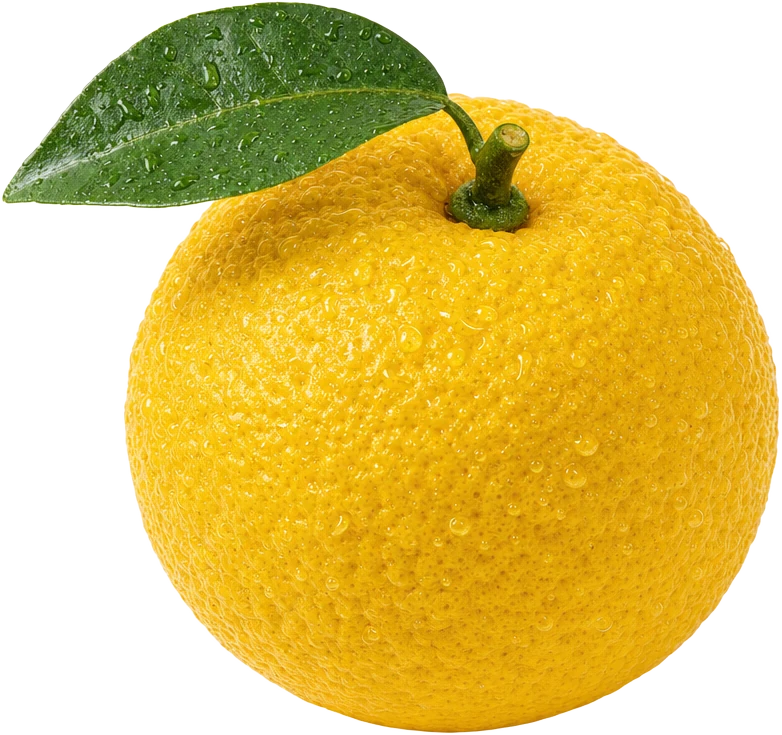
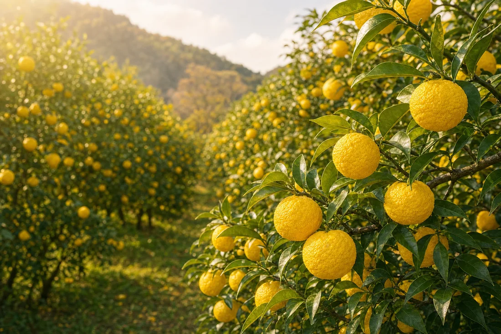
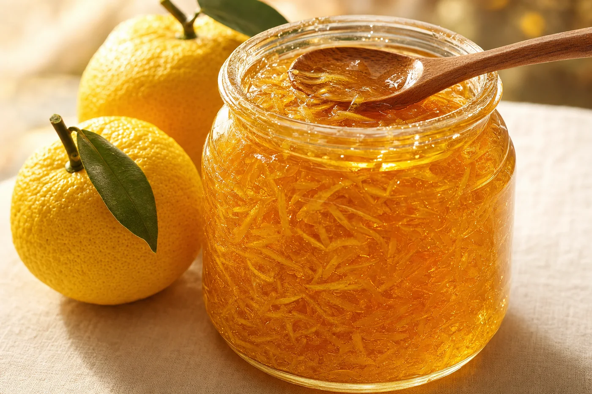
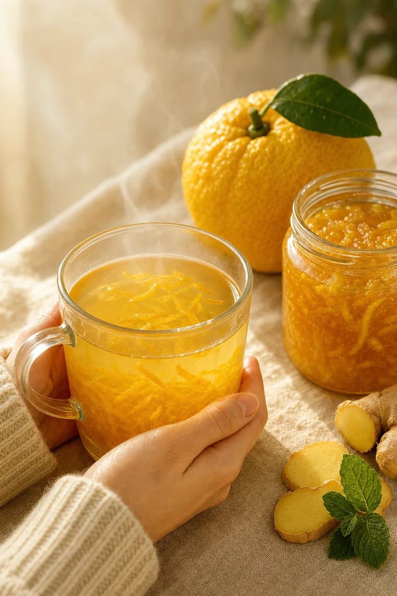
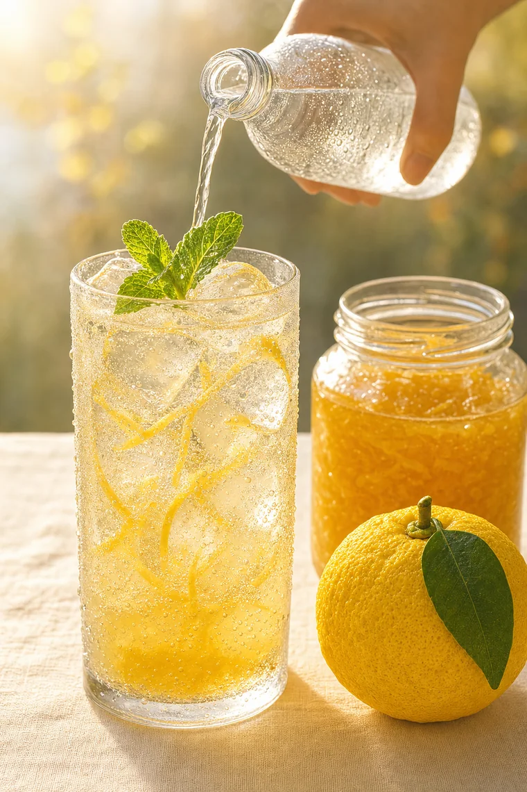
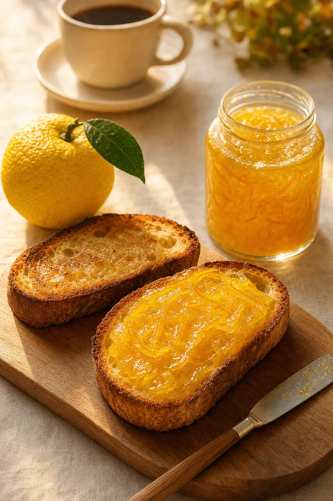
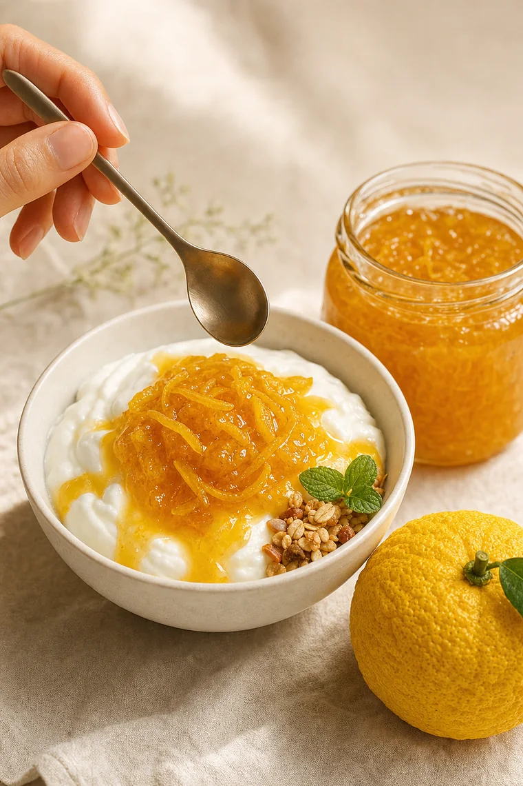
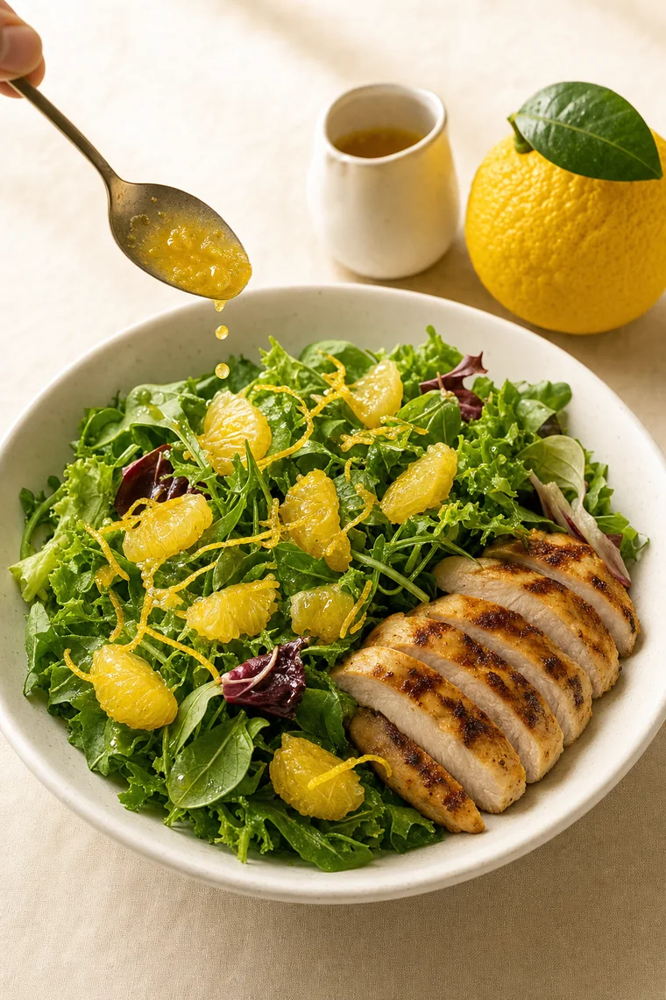

참여 방법
참여 방법
참여 방법
참여 방법
대한민국 남해안에서 자라는 노란 시트러스 계열 과일입니다.
늦가을부터 초겨울까지 수확합니다.
대한민국 천혜의 자연환경 속에서 따뜻한 햇살과 바닷바람을 맞아
껍질이 단단하고 그 향이 짙으며, 한국 유자 특유의 새콤달콤하고
다채로운 맛을 자랑합니다.

유자는 아무 데서나 자라지 않습니다. 기온에 예민하고 햇살을 많이 필요로 하여, 따뜻하면서 일조량이 넉넉한 곳에서만 품질 좋은 과일로 자랍니다. 대한민국 남해안은 그 최적의 조건을 갖춘 곳입니다.
남해안에서 불어오는 바람은 유자의 껍질을 단단하게 합니다. 껍질이 단단해질수록 유자는 그 특유의 산미와 향을 밀도 높게 응축시킵니다.
남해안의 따뜻한 햇살은 유자의 껍질을 노랗게 물들이며 영롱한 빛을 띱니다. 2,400시간이 넘는 따뜻한 햇살을 담습니다. 유자를 통해 한국의 햇살을 맛보세요.
유자나무는 따뜻한 겨울을 필요로 합니다. 겨울 기온 변동 폭이 작은 온화한 기후의 남해안은 유자가 자라기 좋은 최적의 재배지입니다. 해마다 향과 산도, 껍질 색이 고른 품질 좋은 유자를 생산합니다.

유자청이란 유자를 껍질째 얇게 썰어 꿀이나 설탕에 켜켜이 재워 활용하는 한국인만의 전통 방식입니다.
마멀레이드와는 다르게 끓이지 않고, 항아리 안에서 과즙이 자연스레 꿀이나 설탕과 어우러져 걸쭉한 시럽이 되는 원리로
유자 특유의 향까지 즐기기 위한 조리법이었습니다.
유자청은 차, 디저트는 물론 각종 요리와 소스까지 다양한 용도로 두루 사용할 수 있습니다.






유자는 단맛과 산미, 향을 한 번에 더합니다.